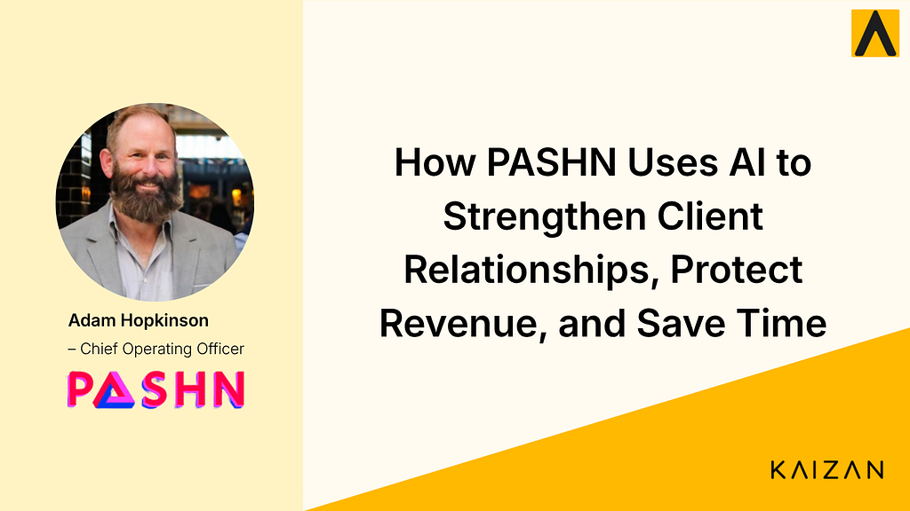

How PASHN Uses AI to Strengthen Client Relationships, Protect Revenue, and Save Time

Adam Hopkinson is the founder and managing director of PASHN Limited, a specialist media agency serving fashion, leisure and entertainment brands. We spoke to him about where the industry is heading, what most agencies get wrong about client relationships, and what’s changed since bringing Kaizan into the business.
Here’s what he had to say.
Watch the full conversation
Prefer to hear it in Adam's own words? Watch the full interview on YouTube.
Efficiency is the first thing to change
Adam isn’t hedging on what AI means for agencies. The processes that have always been slow, manual, and resource-heavy are the first to shift.
“More than one thing, but one thing for sure that is going to change first is the efficiency of the processes that we go through.”
Traditional businesses won’t disappear, he thinks. But they’ll become a smaller part of the landscape. The agencies that move on efficiency now won’t just save time. They’ll free up space to do the work that actually retains clients.
The sentiment that gets missed
Adam’s view on client relationships cuts straight to the thing most agencies overlook.
“There is an underlying sentiment that is often missed in client relationships. And if you can figure that out early, then you can address problems before they happen.”
Meaningful connections aren’t built on check-ins and status updates. They’re built on actually understanding how a client feels about the work, the relationship, and the direction things are heading. Most agencies find out too late. The ones that don’t have a structural advantage.
What agencies can and can’t control
As a media agency, PASHNLimited operates within a constraint most client-side teams don’t face: they can’t influence the budgets they’re given. But Adam is clear about what they can control.
“We are an agent, so we deploy clients’ budgets in the best, most effective way. We can’t influence the budgets that they have, but we can influence whether or not they come back to us because of what we’re doing.”
Retention isn’t a relationship problem. It’s a performance and perception problem. The agencies that keep clients are the ones that consistently demonstrate value and stay close enough to act when something shifts.
Visibility across teams
One of the practical changes Adam describes is how much easier it’s become for his team to stay across client accounts without it becoming a burden.
“It’s made it so that it’s much easier for teams to be across the outcomes of meetings. Better visibility across the teams of what’s going on in clients always helps. It’s hard to get people to commit time to becoming up to speed on everything that’s going on with clients, but the nature of the output of Kaizan has helped out very, very much.”
The meeting notes that would have been a nightmare to distribute and circulate are now a shared resource. The team spends less time getting up to speed and more time acting on what they know.
Acting on declining sentiment before it’s too late
The moment that stands out most from Adam’s experience is a specific one. A client where sentiment was declining, and the team caught it in time.
“We had a client that we were sensing a decline in sentiment. Things go wrong and it’s about how you manage them and put them right. But it helped us understand it and put it into a human context, rather than just in a business frame.”
That framing matters. Client relationships don’t break down because of business problems alone. They break down because the human side of the relationship gets lost. Kaizan surfaces the signal early enough to respond to both.
The thing that has the biggest impact
When Adam is asked what’s made the biggest difference, his answer is time. But not in the way you might expect.
“The thing that has the biggest impact on us using Kaizan is the time that it gives us back. Not only in meetings to be more present and to be more engaged with what is going on, but also afterwards to be able to have a resource that we can drop back into and make sure that we’re doing the things that we said that we’re going to do.”
Presence in meetings. Follow-through after them. Those are the two things that define how clients experience an agency relationship. Getting both right, consistently, is harder than it sounds.
What this means for agencies
Adam’s final word on Kaizan is characteristically direct. He’d recommend it to anyone in a broad agency. Just not to his immediate competitors.
The agencies that stay closer to their clients, catch problems earlier, and give their teams the visibility they need to act will be the ones that last. That’s not a prediction. For PASHN Limited, it’s already happening.